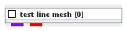
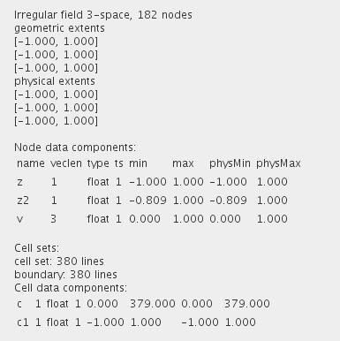
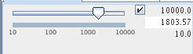

|
|
|

Provides example 3D irregular line mesh dataset.
| input port | type | description | data acceptors |
|---|---|---|---|
| output port | type | description | data schemas |
| outField | VNIrregularField | Field 3-space |
|
| outObj | VNGeometryObject |
TEST LINE MESH
The module provides an example of 3D irregular line mesh dataset.
Output data
The output fields are irregular 3D 3-space.

Computation parameters

The user defines the ... value using either the slider or the text fields for minimum, maximum and current value on the right hand side of the slider, if the check box is on.
Presentation parameters
Presentation parameters are described in the common interfaces section under the Presentation Panel entry.